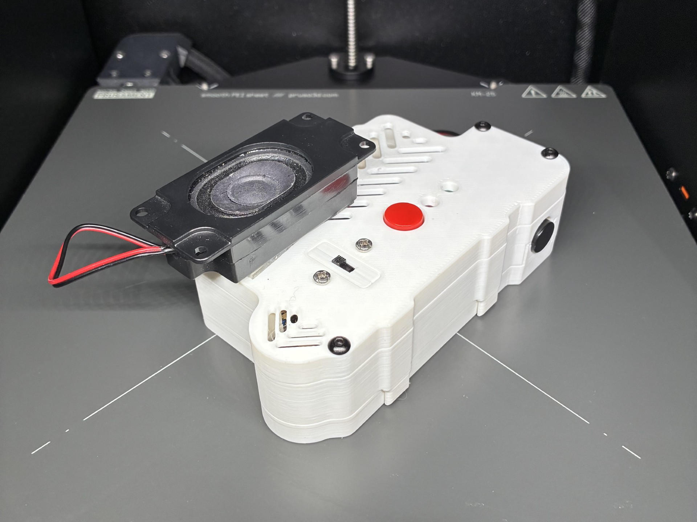
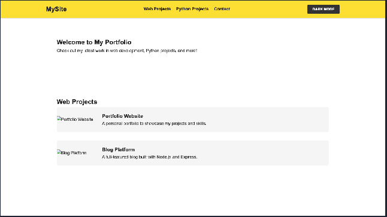
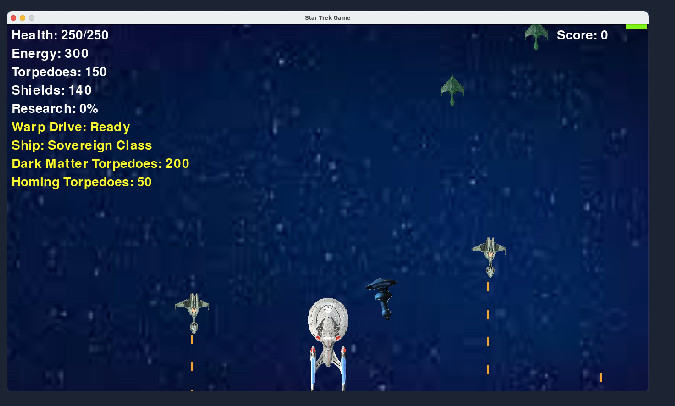

Welcome to My Website!
My name is Christopher Wang.
I'm an 8th grader attending The Village Middle School in Houston, Texas. I have been doing robotics ever since I was 7. I was introduced to FLL, a LEGO robotics competition, and participated for 5 years (ages 7 - 12). Then I did FTC for a year in 8th grade, mentoring and helping my school's team. I also like playing the alto and tenor saxophone with the Village School's Band Elective. I created this website using HTML, JavaScript, and CSS to display and keep a record of some of my past and current projects.
You can find everything at:
My Github
Big Projects

TacocaT Project
A quadrupedal robot similar to the MIT Mini Cheetah.
Stood up in 2026

EchoLingo - Offline Translator
A speech-to-speech translator running on a Raspberry Pi.
It was funded by Nord Anglia's Social Impact Grant in 2026.

Portfolio Website
A personal portfolio to showcase my projects.
Side Projects
SoundBrite
A device that reacts to sound, visually showing the beat and notes of instruments.
Based on the Adafruit CPX and used in the 2025 VMS Band Winter Concert.

Star Trek Game
A 2D Star-Trek-based game made using Pygame, complete with sounds and images.
Contact
Email me at doubaok1710325@gmail.com
All project links are at:
My Github